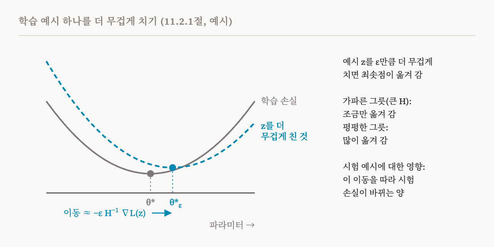
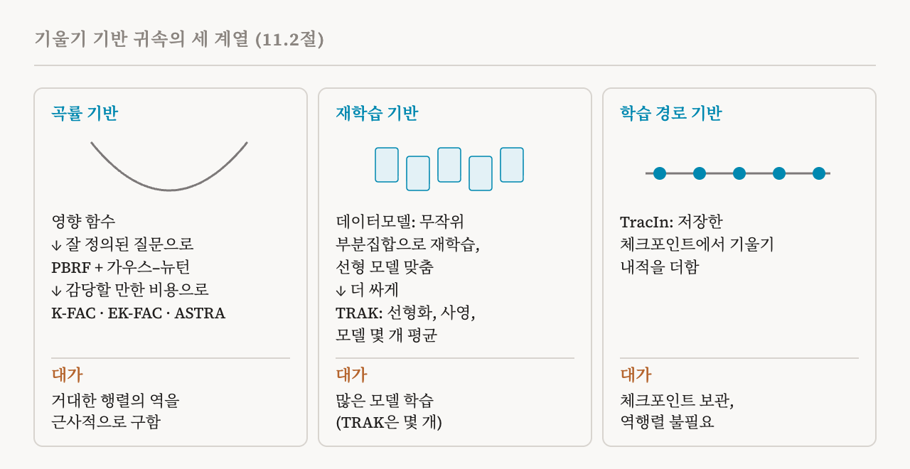

29편은 모델의 출력을 학습 데이터 속의 정확한 복사본까지 추적했습니다. 이번 편은 이 책 11장의 나머지인 11.2절(96–101쪽)로, 기울기 기반 귀속을 다룹니다. 이 책에서 가장 수학적인 절 가운데 하나지만, 이 연재의 다른 편들처럼 식은 하나하나 말로 풀어 설명합니다.
질문
기울기 기반 방법은 학습 샘플 하나하나가 모델의 예측에 얼마나 영향을 주었는지 추정합니다. 중심 도구인 영향 함수는 학습 샘플 하나를 조금 더 무겁게 쳤다면, 즉 학습할 때 조금 더 중요하게 다뤘다면 모델의 파라미터와 예측이 어떻게 바뀌었을지를 추정합니다. 가장 무식한 방법은 그 샘플을 더 무겁게 쳐서 모델을 다시 학습시키고 무엇이 바뀌는지 보는 것입니다. 요즘 모델에서, 그것도 물어볼 만한 샘플마다 그렇게 하기에는 비용이 너무 큽니다. 영향 함수는 다시 학습시키지 않고 그 변화를 추정합니다.
핵심 생각을 말로
학습은 n개의 학습 샘플 전체에 대한 평균 손실을 가장 작게 만드는 파라미터를 찾습니다. 이것을 θ*라고 씁니다. 이제 샘플 하나, z를 작은 양 ε만큼 더 무겁게 친다고 합시다. z의 손실에 ε을 곱해서 목표 함수에 한 번 더 더하는 것입니다. 새로운 최적의 파라미터 θ*ε에는 닫힌 공식이 없고, 다시 학습시켜서 찾는 것은 우리가 피하려던 일입니다.
이 책의 유도는 대신 새 해가 가진 성질 하나를 이용합니다. 최솟점에서는 목표 함수의 기울기가 모든 방향에서 0입니다. 이 조건이 파라미터와 ε을 묶어 주고, 음함수 정리라는 미적분의 결과가 ε이 조금 바뀔 때 이런 방정식의 해가 어떻게 움직이는지 알려 줍니다. 여기에는 두 가지 가정이 필요합니다. 목표 함수가 최솟점 근처에서 매끄러워야 합니다. 그리고 최솟점 주변에서 손실이 모든 방향으로 어떻게 휘는지 담은 2차 도함수의 표인 헤세 행렬의 역행렬을 구할 수 있어야 합니다. 이 가정 아래에서, ε이 0에서 커지기 시작할 때 파라미터는 헤세 행렬의 역행렬에 z의 손실 기울기를 곱하고 마이너스를 붙인 방향으로 움직이기 시작합니다.
말로 풀면 이렇습니다. z의 손실 기울기는 모델이 z를 더 잘 맞히려면 파라미터가 어느 쪽으로 가야 하는지를 가리킵니다. 헤세 행렬의 역행렬을 곱하면 그 걸음이 손실의 모양에 맞게 조정됩니다. 학습 손실이 가파르게 오르는 방향으로 움직이면 다른 모든 샘플이 손해를 보므로 파라미터는 거의 움직이지 않습니다. 평평한 방향으로는 쉽게 움직입니다.

우리가 보통 신경 쓰는 것은 시험 예시의 손실처럼 시험할 때 재는 어떤 양에 대한 효과입니다. 연쇄 법칙을 쓰면 파라미터의 움직임이 그 양의 변화로 바뀝니다. 시험 손실의 기울기를 위의 파라미터 움직임과 결합하는 것입니다. 그 결과가 시험 예시에 대한 학습 샘플의 영향 점수입니다. ε이 작으면 시험 손실의 변화는 대략 ε 곱하기 영향 점수입니다. 1차 근사로, 부호는 그 학습 예시를 더 무겁게 쳤을 때 시험 손실이 오를지 내릴지를 알려 줍니다. 크기는 얼마나 바뀔지를 알려 줍니다.
원래 형태가 통하지 않는 이유와 해법
이 책은 이 원래 형태가 실제로는 잘 통하지 않는다고 솔직하게 말합니다. 가정들이 거의 성립하지 않기 때문입니다. 학습된 신경망의 파라미터가 정확히 최솟점에 있는 일은 거의 없습니다. 그리고 헤세 행렬은 보통 역행렬을 구할 수 없거나 수치적으로 불안정합니다. 어떤 방향은 거의 완전히 평평해서, 역행렬을 구하려면 0에 가까운 수로 나누어야 하기 때문입니다.
고전적인 대응은 2022년에 나온 근위 브레그만 응답 함수(PBRF)입니다. 새 목표 함수의 정확한 최솟점을 묻는 대신, 더 잘 정의된 질문을 던집니다. 학습 세트에 대한 모델의 예측을 원래 예측에 가깝게 유지하고, 파라미터를 학습된 값 가까이에 두면서, z를 더 무겁게 친 것에 가장 잘 응답하는 파라미터는 무엇인가? 여기에는 두 가지 재료가 있습니다. 첫째는 학습 손실을 브레그만 발산으로 바꾸는 것입니다. 브레그만 발산은 손실 자체를 잣대로 새 출력이 원래 출력에서 얼마나 멀어졌는지 잽니다. 새 출력에서의 손실이, 원래 출력에서 그은 직선으로 어림한 값보다 얼마나 큰지입니다. 둘째는 학습된 파라미터와의 거리의 제곱에 세기 λ로 벌점을 주는 근접 항입니다. 두 항은 학습된 파라미터에서 0이고 결코 음수가 되지 않습니다. 그래서 더 무겁게 치지 않았을 때에는 학습이 수렴했든 안 했든 학습된 파라미터가 이미 최선의 답입니다.
그러면 음함수 정리를 쓴 같은 논증이 헤세 행렬 자리에 다른 행렬을 넣은 채로 그대로 통합니다. 일반화 가우스–뉴턴(GGN) 행렬에 λ 곱하기 단위 행렬을 더한 것입니다. GGN은 학습 예시마다 모델의 출력이 파라미터에 따라 어떻게 바뀌는지와, 출력이 바뀔 때 손실이 어떻게 휘는지를 결합합니다. 교차 엔트로피 같은 흔한 손실은 출력이 바뀔 때 위로 휘므로, GGN은 어느 방향으로도 아래로 휘지 않습니다. 여기에 λ를 더하면 행렬은 그 구성 자체로 역행렬을 가집니다. 헤세 행렬은 그렇지 않습니다. 이 행렬로 계산한 영향은 정확히 PBRF 답의 변화율이고, 2022년 연구는 이런 추정이 실제로 PBRF와 잘 맞는다는 것을 확인했습니다. 그 연구의 제목이 요점을 잘 담고 있습니다. 「If Influence Functions Are the Answer, Then What Is the Question?」, 즉 영향 함수가 답이라면 질문은 무엇인가? 연구가 내놓는 답은 '처음부터 다시 학습시키면 어떻게 될까'가 아니라 PBRF입니다.
감당할 만하게 만들기: K-FAC과 그 후속
GGN은 파라미터마다 행과 열을 하나씩 가집니다. 파라미터가 수십억 개인 모델에서는 역행렬을 구하기는커녕 저장하기에도 너무 큽니다. 후속 방법들은 최적화 분야의 기법을 빌려 와서 역행렬을 직접 계산하는 일을 피합니다.
2015년의 크로네커 인수 분해 근사 곡률(K-FAC)은 이와 가까운 행렬인 피셔 정보 행렬을 근사합니다. 피셔 정보 행렬은 모델 자신의 예측에서 뽑은 레이블에 대한 로그 확률의 기울기로 만듭니다. 소프트맥스 교차 엔트로피 같은 흔한 손실에서는 이 행렬이 GGN과 같으므로, K-FAC이 GGN을 대신할 수 있습니다. K-FAC은 두 가지를 단순하게 만듭니다. 서로 다른 층 사이의 곡률은 무시하고 층마다 블록 하나만 남깁니다. 그리고 한 층 안에서는 층의 입력 활성값과 출력 쪽으로 거슬러 흐르는 기울기를 서로 독립이라고 보아서, 블록을 각각에서 나온 작은 행렬 두 개의 크로네커 곱으로 만듭니다. 그러면 메모리가 훨씬 덜 들고, 작은 인수 하나하나의 역행렬을 따로 구할 수 있습니다. 예를 들어 입력과 출력이 각각 4,096개인 층에서 전체 블록은 약 280조 개의 원소를 갖지만, 인수 두 개를 합치면 약 3,400만 개입니다.
2018년의 EK-FAC은 K-FAC의 고윳값을 보정해서 개선했고, 2023년의 한 연구는 이것으로 영향 함수를 대규모 언어 모델까지 키웠습니다. 2025년의 ASTRA는 한 걸음 더 나아갑니다. 역행렬을 곱하는 일을 근사하는 반복 방법을 EK-FAC으로 빠르게 해서, 조정을 덜 하고도 더 정확한 결과를 얻습니다. 이런 노력 덕분에 영향 함수는 파라미터가 수십억 개인 언어 모델에서도 점점 실용적이 되고 있습니다.
영리하게 다시 학습시키기: 데이터모델과 TRAK
다시 학습시키는 쪽으로 돌아가되 영리하게 하는 방법도 있습니다. 가장 단순한 방법은 학습 샘플마다 더 무겁게 치거나 빼고, 다시 학습시키고, 시험 예시에 대한 출력을 지켜보는 것입니다. 2022년의 데이터모델은 이보다 낫습니다. 학습 데이터의 무작위 부분집합으로 모델을 많이 학습시킨 뒤, 각 모델이 어떤 학습 샘플을 봤는지로 시험 예시에 대한 모델의 출력을 예측하는 선형 회귀를 맞춥니다. 맞춘 계수 하나하나가 그 시험 예시에 대한 샘플 하나의 영향입니다. 하지만 여전히 모델을 많이 학습시켜야 합니다.
2023년의 TRAK은 더 효율적인 대안입니다. 먼저 파라미터 주변에서 1차 테일러 전개를 써서, 학습된 모델을 선형 모델로 근사합니다. 그다음 무작위 사영으로 기울기를 훨씬 적은 차원으로 줄이고, 그 작은 공간에서 영향을 추정합니다. 마지막으로 학습된 모델 몇 개에 대한 추정을 평균해서 학습의 무작위성이 주는 영향을 줄입니다. TRAK은 훨씬 적은 비용으로 데이터모델에 견줄 만한 귀속 품질에 이릅니다.
학습 경로를 따라가기: TracIn
2020년의 TracIn은 헤세 행렬의 역행렬 없이, 학습 경로를 따라 얻은 기울기로 영향을 추정합니다. 출발점은 학습 샘플 z로 하는 확률적 경사 하강의 한 걸음입니다. 이 한 걸음은 학습률만큼 파라미터를 z의 기울기 반대쪽으로 옮깁니다. 1차 근사로 보면, 이 걸음이 시험 예시의 손실을 바꾸는 양은 학습률 곱하기 시험 예시의 기울기와 z의 기울기의 내적에 마이너스를 붙인 것입니다. 내적이 양수이면 이 업데이트는 시험 손실을 낮춥니다. 음수이면 높입니다.
TracIn은 이것을 학습 전체로 넓힙니다. 실용적인 버전인 TracInCP는 저장해 둔 체크포인트들에서 학습률을 곱한 이런 내적을 모두 더합니다. 양의 점수가 클수록 z가 시험 손실을 줄이는 데 더 많이 기여했다는 뜻입니다. 헤세 행렬에 기반한 영향 함수와 달리 TracIn은 역행렬을 구할 필요가 없습니다. 하지만 보관해 둔 체크포인트만 보기 때문에 추정이 덜 정확할 수 있습니다. 26편에서 말했듯이, 체크포인트마다 따로 계산한 기여를 보면 그 예시가 언제 가장 중요했는지도 알 수 있습니다.

기울기는 찾고 일치는 못 찾는 것
이 책은 번역 과제로 29편과의 차이를 보여 줍니다. 프롬프트는 개와 함께 프리스비 놀이를 하는 이야기를 담은 짧은 영어 문단과, 그 뒤에 붙은 'Chinese:'라는 단어입니다. 기울기 기반 방법은 한 유명인의 음악과 영화 경력에 관한 영어 문장들에 품질이 고르지 않은 중국어 번역이 하나씩 붙어 있는 학습 문서를 영향력 있는 것으로 골라냈습니다. 그 안의 어떤 것도 모델의 출력과 글자 그대로 일치하지 않습니다. 하지만 그것은 모델에게 영어를 중국어로 옮기는 법을 가르치는 종류의 데이터입니다. 이 책의 관찰은, 영향 함수가 정확히 일치하지 않아도 번역을 빚은 학습 문서를 찾아낼 수 있어서 글자 그대로의 방법이 보여 줄 수 있는 것 너머의 영향을 잡아낸다는 것입니다.
최근의 확장과 한계
최근 연구는 학습의 무작위성을 다루도록 귀속을 넓히고 있습니다. 분포적 학습 데이터 귀속은 가능한 여러 학습 실행에 걸친 모델 출력의 분포가 데이터셋에 어떻게 달려 있는지 추정합니다. 이미지를 생성하는 확산 모델을 위한 TRAK의 변형도 나왔습니다. 그리고 더 새로운 연구는 귀속을 기계적 해석 가능성과 직접 잇습니다. 2026년의 Concept Influence는 출력 전체가 아니라, 희소 오토인코더 특징처럼 모델 안에 표현된 의미적 개념 수준에서 귀속합니다. 그러면 학습 데이터 귀속이 학습 데이터가 특정한 내부 계산을 어떻게 빚는지 이해한다는 기계적 목표에 더 가까워집니다.
하지만 근본적인 문제들이 남아 있습니다. 학습 경로를 따라 쌓여 가는 근사 오차, 데이터 순서 같은 무작위성 때문에 생기는 학습 실행 사이의 차이, 그리고 최전선 모델까지 규모를 키울 때의 메모리와 계산 비용입니다.
이 장을 한눈에
이 책의 11장 요약은 짧습니다. 학습 데이터 귀속은 행동을 학습 데이터까지 거슬러 추적합니다. OLMoTrace 같은 글자 그대로의 방법은 외운 구간을 찾아냅니다. 영향 함수 같은 기울기 기반 방법은 학습 샘플 하나하나가 예측에 얼마나 기여하는지 추정합니다. 둘 다 큰 규모에서는 여전히 한계가 있습니다. 최근 연구는 귀속을 내부의 특징과 메커니즘에 잇기 시작했습니다. 이로써 이 책은 해석 가능성 방법의 주요 계열을 모두 훑었습니다. 다음 장은 한 걸음 물러서서 이 방법들을 여섯 가지 연구 방향으로 정리합니다.
| 방법 | 핵심 생각 | 비용과 함정 |
|---|---|---|
| 고전적 영향 함수 | 샘플을 더 무겁게 치고 손실의 곡률로 보정 | 최솟점과 역행렬을 구할 수 있는 헤세 행렬을 가정함, 둘 다 거의 성립하지 않음 |
| PBRF와 GGN | 학습된 모델 가까이에 머물면서 더 무겁게 친 것에 응답 | 잘 정의되지만 행렬이 거대함 |
| K-FAC, EK-FAC, ASTRA | 층마다 작은 인수로 곡률을 근사 | 수십억 개의 파라미터까지 닿는 근사 |
| 데이터모델 | 무작위 부분집합으로 다시 학습시키고 선형 모델을 맞춤 | 아주 많은 모델을 학습시켜야 함 |
| TRAK | 모델을 선형화하고, 기울기를 사영하고, 모델 몇 개를 평균 | 훨씬 적은 비용으로 데이터모델에 가까움 |
| TracIn | 체크포인트들에서 기울기 내적을 더함 | 역행렬이 필요 없음, 어떤 체크포인트를 보관했는지에 달림 |
| 용어 | 뜻 |
|---|---|
| 영향 함수 | 학습 예시 하나를 조금 더 무겁게 쳤다면 예측이 어떻게 바뀌었을지 추정한 것 |
| 더 무겁게 치기 | 학습 목표 함수에서 학습 예시 하나를 조금 더 중요하게 다루는 것 |
| 기울기 | 파라미터가 바뀔 때 손실이 가장 빨리 커지는 방향과 그 빠르기 |
| 헤세 행렬 | 손실의 2차 도함수로, 손실이 모든 방향으로 어떻게 휘는지 담은 것 |
| 음함수 정리 | 방정식의 어떤 양이 조금 바뀔 때 그 해가 어떻게 움직이는지에 관한 결과 |
| 영향 점수 | 학습 예시 하나가 시험할 때 재는 양에 주는 1차 효과 |
| PBRF | 근위 브레그만 응답 함수, 실용적인 영향 함수가 답하는 잘 정의된 질문 |
| 일반화 가우스–뉴턴(GGN) | 출력이 파라미터에 어떻게 반응하는지로 만든 곡률 행렬, λ를 더하면 역행렬을 가짐 |
| 피셔 정보 행렬 | 모델 자신이 예측한 레이블로 만든 곡률 행렬, 흔한 손실에서는 GGN과 같음 |
| K-FAC | 층마다 곡률을 작은 행렬 두 개로 근사하는 것 |
| 데이터모델 | 모델을 많이 학습시켜, 어떤 학습 예시가 들어갔는지로 출력을 예측하는 것 |
| TRAK | 선형화한 모델과 무작위 사영을 써서 데이터모델을 싸게 대신하는 것 |
| TracIn | 저장한 체크포인트들에서 기울기 내적을 더하는 것 |
31편에서는 연구 방향을 다루는 부를 엽니다. 이 책이 제시하는 해석 가능성 연구의 여섯 가지 방향입니다.